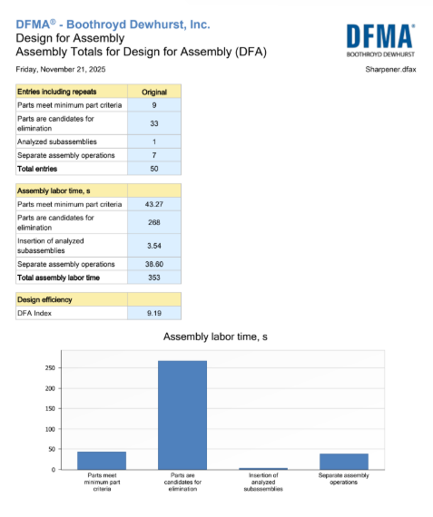

Redesign of Staples Desk Mate
Electric Pencil Sharpener
A DFMA-driven redesign of a consumer electric pencil sharpener to reduce part count, simplify assembly, and improve manufacturability, cost, and safety.
This project involved redesigning the Staples Desk Mate consumer electric pencil sharpener using Design for Manufacturing and Assembly (DFMA) principles to improve manufacturability, assembly efficiency, cost, and safety.
Industry-standard DFMA software was used to perform Boothroyd-Dewhurst DFA and Lucas Method analysis, guiding part reduction and assembly simplification. Multiple redesign concepts were compared using a weighted decision matrix, and a Failure Mode and Effects Analysis (FMEA) was conducted to ensure safety and reliability.

- Analysed the original sharpener to understand system function, subassemblies, and assembly sequence
- Identified key issues: high part count, fastener-heavy construction, and packaging inefficiencies
- Used DFMA software to evaluate the baseline design using Boothroyd-Dewhurst analysis
- Applied Lucas Method to classify elements as essential or non-essential and evaluate design efficiency
- Developed multiple redesign concepts focused on reducing part count and improving assembly flow
- Compared concepts using a weighted decision matrix based on performance, cost, and sustainability
- Conducted FMEA to identify and mitigate safety and reliability risks
- Incorporated risk-mitigation strategies into the final design



The redesigned sharpener reduced part count by eliminating redundant components, simplified the assembly process by reducing fastener usage, and decreased overall assembly time and handling complexity while maintaining full product performance.
- Reduced part count by eliminating redundant and non-value-adding components
- Simplified assembly process by reducing fastener usage and improving flow
- Decreased assembly time and handling complexity
- Maintained product performance and user requirements throughout